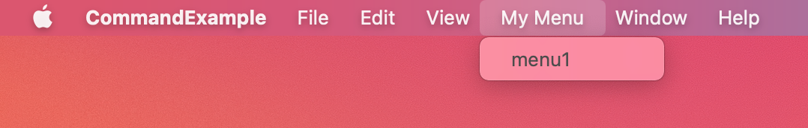

本文介绍了SwiftUI 2.0中，如何为macOS平台添加菜单。
当前运行环境为 Xcode Version 12.0 beta (12A6159), macOS Big Sur 11.0 Beta版(20A4299v)。
苹果在SwiftUI2.0中增加了Multiplatform项目模板，使得同一套代码，仅需少量的适配便可以同时满足iOS以及macOS的需要。对于macOS上运行的app,拥有自定义的菜单是一个十分重要的平台特征。对于没有macOS开发经验的我来说，学习如何设计开发菜单变得十分有趣且必要。
基础
在SwiftUI下为app添加菜单十分方便，下面的代码便可以为app添加一个最基础的菜单。
1 | @main |
通过创建一个符合Commands协议的结构来描述你要在app中添加的自定义菜单项

几个概念
-
@CommandBuilder
SwiftUI2.0中，苹果为我来带来了很多新的function builder。Menu中的body，其实就是一个@CommandsBuilder。我们可以通过使用内置的语句通过DSL的方式，方便的定义自己所需的菜单。DSL的好处是简单明了，不过功能也有所限定，目前@CommandsBuilder支持的方法比较少，并不支持逻辑判断。
1
2
3
4
5
6
7
8
9
10
11
12
13
14
15
16
17
18
19
20
21
22
23
24
25struct MyCommand:Commands{
//如果需要多个菜单列，需在body前显式注明@CommandsBuilder，或者使用Group，这一方法，同样使用与其他functionBuilder的描述。
@CommandsBuilder var body: some Commands{
//每个CommandMenu都是一个菜单列
CommandMenu("Menu1"){
Button("Test1"){
print("test2")
}
Button("Test2"){
print("test2")
}
}
CommandMenu("Menu2"){
Button(action: test1{
Text("😃Button")
}
}
}
private func test1(){
print("test command")
}
}
-
CommandMenu
CommandMenu是一个菜单列，在同一个CommandMenu中，你可以定义多个Button。CommandMenu中的Content是符合View协议的，也就是说，View中不少手段、控件都可以被用来描述菜单的具体呈现。我们可以像编写View一样来编写菜单（比如设置字体、颜色、循环、判断等等）。
1
2
3
4
5CommandMenu("Menu"){
Button("test1"){}
Divider()
Button(action:{}){Text("test2").foregroundColor(.red)}
}
-
Button
菜单中单个选项的实现方法。
1
2
3
4
5
6
7Button(action: {}){
HStack{
Text("🎱").foregroundColor(.blue)
Divider().padding(.leading,10)
Text("Button")
}
}
-
MenuButton
子菜单的实现方法。
1
2
3
4
5
6
7
8
9
10
11
12
13
14
15
16
17
18
19CommandMenu("Test"){
Button(action:{test1()}){
Text("test1").foregroundColor(.black)
}
#if os(macOS)
MenuButton("Switch Selection"){
Button("one"){
store.changeState(.one)
}
Button("two"){
store.changeState(.two)
}
Button("three"){
store.changeState(.three)
}
}
#endif
}
-
.commands
Scene的方法，为场景添加菜单。commands中允许添加多个符合Commands协议的菜单定义。所有定义的菜单都会一并显示。
1
2
3
4
5
6
7
8WindowGroup {
RootView()
.environmentObject(store)
}
.commands{
OtherMenu()
Menu()
}
-
keyboardShortcut
为菜单上的选项添加快捷键。通过modifiers设置需要配合的按键，.help为选项添加悬停帮助
1
2
3
4
5
6
7
8
9Button(action:{test1()})
{
Text("test1").foregroundColor(.black)
}
.keyboardShortcut("1", modifiers: [.command,.shift])
.help("help test1")
Button("test2", action: test2)
.keyboardShortcut("2", modifiers: .command)
-
CommandGroup
在系统提供的默认菜单选项上添加自定义功能。通过replacing,before,after来决定是替换原选项还是设置在指定选项位置之后或之前。
1
2
3
4//在系统预置的帮助菜单栏下，添加一个自己的选项
CommandGroup(replacing: CommandGroupPlacement.appInfo, addition: {Button("replace"){}})
CommandGroup(before: CommandGroupPlacement.help, addition: {Button("before"){}})
CommandGroup(after: CommandGroupPlacement.newItem, addition: {Button("after"){}})
例子
这里简单的例程展示了如何在menu如何通过调用store来影响app的行为。并做了简单的多平台适配。在macOS平台下，通过选择子菜单中不同的选项来影响显示文本。在iOS下通过picker来实现。
1 | @main |
补充（打开新窗口）
我尝试在菜单按钮中打开新的View，不过并没有找到原生的SwiftUI式的方法。我更希望@SceneBuilder能够支持逻辑判断，这样可以任意在WindowGroup组织我想显示的View了。
1 | //打开新的View |
当前的问题
由于目前还处在早期的测试阶段，菜单的实现和功能上还有些不足之处，以下是我现在比较在意的：
- Button文本的缺省颜色和系统的菜单选项颜色不同。需要手工设置
- ShortCut的颜色和系统菜单的颜色不同
- Divider的颜色和系统菜单不同
- MenuButton在多平台开发时，必须添加编译注释。而其他比如创建Commands，.commands等都不需要
- @CommandBuilder和@SceneBuilder目前都不支持判断。因此无法通过程序动态的添加或减少一个菜单列。不过从.command中可以添加多个Commands结构来看，后续应该是有这样的打算的。
 支付宝打赏
支付宝打赏
 微信打赏
微信打赏
请我喝杯茶